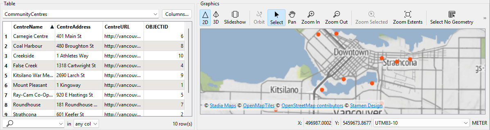
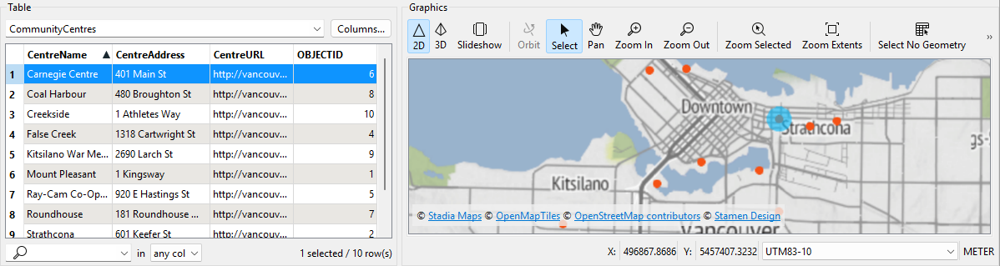

Learning Objectives
After completing this lesson, you’ll be able to:
- Explain the value of spatial data integration.
- Define basic spatial data concepts: vector, raster, point, line, and polygon.
Spatial Data is Important
To many, the concept of 'spatial data' translates directly to 'map.' Maps are a great way to display spatial data, but they are only one of many ways spatial data can be helpful. After all, everything we see and do has some spatial component. Where we live, how we travel - the list doesn’t end.
By analyzing spatial data, we can learn more about why certain spatial relationships exist and how certain variables impact our lives. Why are specific locations popular travel destinations? Why does a brand do successfully in one country and not another? It’s time to start adopting spatial and location data practices to better understand human behavior and our influence on the planet.
More and more organizations are producing and using spatial data. However, getting value out of that data through automating business processes and analyzing spatial patterns requires spatial data integration. Many data integration platforms exist, but FME provides the best support for spatial data integration.

Spatial data: data representative of a specific geographic location on the surface of the Earth.
Spatial data is often used with a geographic information system (GIS), designed to capture, store, manipulate, analyze, manage, and present all types of spatial data.
If you are familiar with spatial data, skip to the Quiz.
Computers usually store spatial data in vector or raster formats. Vector spatial data consists of points, lines, and polygons. At its core, it consists of lists of coordinates on a plane and information regarding how they are connected.
Raster data comprises pixels, where a pixel's value (or color) represents the value of a phenomenon, e.g., the average annual precipitation. Standard imagery uses the visible spectrum like a regular photograph. However, other kinds of imagery are available. For example, you can use imagery in the near-infrared band to measure the prevalence of vegetation beyond what the human eye can detect.
Raster data is better for representing continuous data that varies over an entire area, such as elevation. Vector data is better for representing discrete objects, such as the outlines of buildings (polygons).
| Geometry type |
Illustration |
Examples |
| Point |
 |
Cell towers
Community centers
Fire hydrants
Oil wells
|
| Line |
 |
Electricity distribution network
Pipelines
Roads
Trails
Water distribution network
|
| Polygon |
 |
Administrative borders
Building footprints
Service areas
Water bodies
Zoning districts
|
| Raster |
 |
Classified land use
Elevation
Orthophoto (a satellite or aerial photograph adjusted so the scale is uniform)
Scanned documents
|
Getting Value from Spatial Data
Spatial data contains geometry data that describes the actual location of the data. It also usually includes attribute data that describes the features. For example, here is a dataset of point locations of community centers that includes attributes such as “CentreName” and “CentreAddress.”

Community center points with attribute data. Map tiles © Stadia Maps, © OpenMapTiles, © OpenStreetMap contributors, © Stamen Design
Having geometry and attributes in the same dataset lets you query or filter the data. For example, you could filter the dataset of community centers to select the point with a “CentreName” that equals “Carnegie Centre.”

Selecting a point. Map tiles © Stadia Maps, © OpenMapTiles, © OpenStreetMap contributors, © Stamen Design
You can use spatial data to create maps or analyze them to identify patterns such as clusters. However, you must integrate spatial data with other sources to gain maximum value. For example, retail businesses integrate existing store locations, road networks, and neighborhood demographic data to identify the best place to build new stores.
Integrating spatial with nonspatial data, such as spreadsheets or database tables, is also possible. This integration is possible if the nonspatial data has an attribute with spatial information. Many nonspatial datasets contain addresses, coordinates, or other identifiers. Combining these with spatial data allows you to unlock new insights. For example, retail businesses combine customer transaction data (containing their zip or postal code) with neighborhood demographic data to understand their customers and market their products or services more effectively.